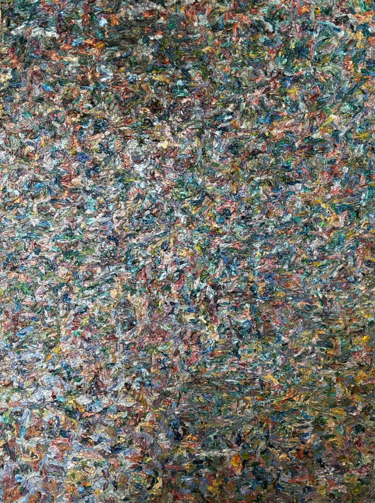

Painter
Haley Pannell
Thick paint, gathered
one mark at a time.
Selected works
Hover a painting to rake light across its surface Tap a painting to look closer

Untitled II

Untitled III
About
Paintings built one mark at a time — thousands of thick, deliberate touches of paint gathering into fields of color and light.
Haley Pannell works in heavy impasto, layering paint until the surface becomes a terrain of its own: ridges, folds and crusts that catch the light and change as you move around them.
Up close, every mark stays distinct — a fleck of cobalt, a fold of crimson, a curl of silver. From across the room they begin to merge into something closer to weather: foliage, water, a reef, light falling through trees.
There is no single place for the eye to land. The paintings are made to be wandered, and to reward the slow look.